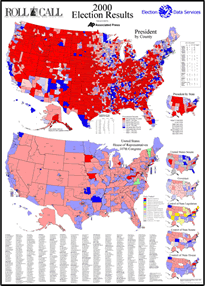

- data -
|
This web site is part of the IGS Central Bureau Information System (CBIS), providing both IGS member organizations and the public with a gateway to all the IGS global data and data product holdings, as well as other valuable information. . IGS -- International GPS Service Welcome to the International GPS Service Important IGS Format News Click here for the latest on new IGS site log, data, and data product formats The U. Global Positioning System (GPS) constellation of satellites plays a major role in regional and global studies of Earth. In the face of continued growth and diversification of GPS applications, the worldwide scientific community has made an effort to promote international standards for GPS data acquisition and analysis, and to deploy and operate a common, comprehensive global tracking system. |
Currently some types of data are available for about 36 elements. . NASA Astrophysics Data System (ADS) Data Services Astrophysics Data System (ADS) Data Services The ADS provides several data access services through the World Wide Web. The following list provides links to these services. In addition, we have searching capability for the LANL Preprint Archive.
|  |
|
htm Ovation's VAR and Authorized Reseller Relationships - var. . World Leaders in Digital Data Management for the creation, storage, management, preservation and interchange of digital information. htm Corporate Profile Introduction to Ovation Data Services, Inc - ODS_Introduction_Brief. htm Service Request Forms Ovation's Service Request Forms - request. |
|
Financial Data Services cannot be held responsible for their contents. . Financial Databases Directory Financial Data Services Financial Data for Business Professionals "); document. 223 billion of private equity and venture capital was invested in financial services in 2000. Please keep in mind that many of the web sites and other Internet resources listed on our Web site are controlled by others and their content may change at any time. |
A good data site: http://www.ovationdata.com/Ovation16.ico